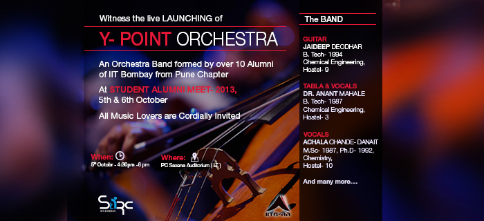
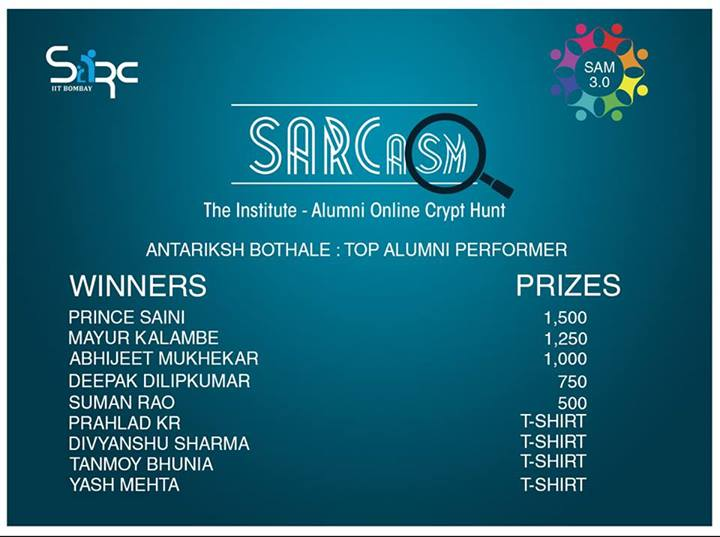

The first IITB orchestra has been put up on board by Pune Chapter of IIT Bombay Alumni Association, comprising of over 10 alumni who have transformed their love for music into their own band. The troupe is composed of alumni from way back to 70s to much recent graduates. Adding to it, some members of the Y Point Orchestra are from family of alumni. Holding such large potential talent in the symphony, the “YPO” is all set to launch itself in the Student Alumni Meet 2013, scheduled on 5th-6th October.

The orchestra is rich with diversity with splendid performers, holding Saxophone, Guitars, Accordion, Tabla, Bongo, Flute and you name it.
|
Name of the Alumnus |
Batch |
Orchestra Role |
Department |
Hostel |
|
Jaideep Deodhar |
1994 |
Guitar |
Chemical Engineering |
9 |
|
Dr. Anant Mahale |
1987 |
Singer and peripheral rhythm |
Chemical Engineering |
3 |
|
Achala Chande-Danait |
1992 |
Vocals |
Chemistry |
10 |
|
Mrs. Sandhya Sakhardande (Mr. Yashwant Sakhardande) |
1980 |
Singer |
Mechanical |
8 |
|
Ajay Bhagwat |
80-85 |
Accordion, Keyboard, side rhythm |
Electrical |
3 |
|
Deepak Thite |
1996 |
Tabla |
Thermal & Fluids Engineering |
5 |
|
Nandu Kulkarni |
1974 |
Singer and Bongo |
Electrical |
3 |
|
Anil Karmarkar |
1974 |
Saxophone and Flute |
Metallurgy |
3 |
|
Ashish Belagali |
1992 |
Singer |
Chemical Engineering |
6 |
|
Shrikant . V. Joshi |
1981-1983 | Singer | Chemical Engineering | 6 |
|
Vishakha Bhedasgaonkar (Mr. Bhalchandra Bhedasgaonkar's daughter) |
1977 |
Singer |
Civil |
6 |
|
Rawindra Mehendaley |
1975-80 |
Vocalist |
Electrical Engineering |
8 |
As we all know, the Rupee is passing through one of its worst crisis in recent times. It crossed 68 to the dollar and is one of the worst performing emerging market currencies today. All this will have far reaching impact on our already precarious current account deficit and imports, not to mention the ever-looming threat of inflation. Keeping these facts in mind, SARC is organizing a Panel Discussion on ' Falling Rupee and its Impact on the Indian Economy ' in the Student Alumni Meet to be held on 5-6th October, as it impacts every individual of the alumni and student community, and will also be a great insight into the country's current economic systems and policies for the students
Panelists include:-
Mr. Ashish Chauhan - Bombay Stock Exchange CEO Mr. Anil Bhalotia - Head India FX, icapindia Dr. Vinish Kathuria - Associate Professor at Shailesh J. Mehta School of Management
Moderator for the Event:-
To combat cheating, most universities and high schools rely on an honor code, founded upon the belief that students are mature and responsible enough to regulate themselves. Yet students do not always display the most honorable behavior. How can we most effectively address these growing holes in the academic system? To address this issue, SARC is conducting a panel discussion on the topic of Honor Code - Its reputation & Effectiveness: The debate is organized with a view to make students @ IITB to understand the honor code and its implications, and also make a fruitful discussion on whether such an honor code will actually be effective or not.
Panelists include:-
Prof.Urjit Yajnik - Dean Student Affairs
Prof. Tandaiya - Mechanical Engg Department
Dhanashree - GSAA UG
Nivvedan - Editor, InsIghT
"Mock Interviews" is a new event in SAM initiated last year, catering to the students sitting for placement. Having gone through the process at least once, an alumnus can very well imagine what a student in the final year goes through, from preparation for the resume, aptitude tests and finally, the interview. In many cases, students crumble to the pressure and perform far lower than their true potential, probably because of the nervousness and under-preparation for the interview.
So now an alumnus will be on the other side of the table and give valuable insight to the current students from the eyes of an interviewer, and how a particular response creates an image about a candidate. There will be a main general fundae session on how to tackle interview situations followed by a individual mock individual mock interviews in respective hostels.
Fundae session by:
Anamika Agarwal
Anamika Agarwal is a prestigious alumni for IIT Bombay 2002 batch.Graduated in Civil Engineering, she was research associate in Massachusetts Institute of Technology. She spent 6 years in Goldman sachs as Analyst and then pursued her MBA degree from London Business School.Currently she is analytics product manager at Reuters Market Light.
2 (Two) Institute Incentive Points would be provided for attending the session by Anamika Agarwal
The Teach For India Fellowship program is a 2 year full-time paid commitment in which we place the most promising graduates and professionals as full time teachers in under resourced and low income schools. The Fellowship program is rigorous, challenging and provides Fellows an opportunity to develop themselves as leaders and simultaneously transform the lives of the children under their care. Prior to and during the two-year Fellowship, Teach For India provides Fellows with the technical skills and leadership training required to achieve the goals they have set for themselves and their students.
A brief outline on interactive session :
1) What is Teach for India and what is TFI fellowship program
2) Why you chose fellowship over conventional careers?
3) Why should final year students opt for fellowship/How it will add value to their life?
4) Your experience/learning during fellowship.
Session by:
Ms. Anna Charly
An ice-breaking session held for mentors and mentees who are part of the Alumni Student Mentorship Program (ASMP). Over lunch, mentors and their mentees will have a face-to-face interaction and will get to know one another thus breaking any inhibitions whatsoever.
This event was immensely successful last year and helped to foster excellent long lasting relationships between the alumni mentor and his mentees.
Core Weekend is a series of 10 department wise sessions - where the students get to interact with successful seniors who have taken up Core-Engineering jobs and have excelled in their fields.
This will be great chance for students to learn more about the opportunities that lie in Core-Engineering fields.
It is primarily aimed at benefiting the final year students who are about to sit for placements, to arrive at a well-informed career decision.The sessions can be arranged both in person as well as through video conferencing.
1. Talk on your experiences in various MNCs , and then finally what led you to return to Delhi and start-up.
2. Potential and capabilities of Indian youth on the global scale.
3. Current scenario: Youth mindset, society perceptions. What is blocking us from exploring ?
4. Opportunities: India is becoming a hotspot for investors and VCs. Potential of Indian Market
5. Innovation: "There are many problems to be solved in India by Indians using
Indian methods"
Need for innovation, from within the country.
Why and how current environment is moving in the direction of
supporting innovation.
Talk by:
Mr.Uday Mehta - MD, Sunrise Computer Systems pvt ltd
Student Alumni Meet 2013, SARC is organizing an interactive session on politics, wherein Shri Praful Vora, Convener of Aam Aadmi Party Mumbai Division, and IITB alumnus, C'68, will share his experiences and enlighten on social activism and career in politics. Mr Akshay Marathe, a youth activist in AAP will also be sharing his views on the topic. Those interested in attending the session are requested to please fill in this google form
Session by:
Shri Praful Vora
Btech from IIT Bombay, 1968 and MS from University of Missouri, Rolla,Mo. USA (1970), he one of the most prestigous alumni se have. He has 15 years of activism in civic and election processes, have been Trustee of Jagrut Nagrik Charitable Trust and full time into IAC Presently Convener, Aam Aadmi Party, Mumbai Zillas
SARC, in association with the Alumni Association and Institute Sports Council, is organising the Sports Meet as a part of more inclusive, Student Alumni Meet (SAM) this year. It is indubitable that sports and related activities play a very important role in the life of a person. And when it comes to student life, it is one of the basic things which help the youth have an overall development. From hostel GCs to inter-IIT sports meet practice, we hope that the practice sessions and the team spirit still remain fresh in your hearts. To instill the same spirit in the current generation of freshers and to set an example for the other senior batches of students, this semester we are conducting the fourth version of the alumni sports day in the institute.
This year, we plan to conduct all activities from 5PM to 9PM on Saturday, 5th October 2013. This will be followed by High Tea. The sports-wise schedule for the activities is as follows:
Student Alumni Relations Cell in collaboration with STAB brings you Technical Fair and Technical Talk in the Student Alumni Meet (SAM) 2013.
This year, we have expanded the event to encompass technical activities of the institute in SAM so that the alumni coming to attend the meet can have a glimpse of current tech scene in the institute. There will be around 15 projects (made by students of IITB) showcased at the venue.
Through this event, we aim to develop the spirit of technical activities among students as well as to motivate them to focus on what 'T' stands in the name of this institute. This being the main motive of the talk we are keeping a session on technical talks and a short award ceremony after that.
Awards will be given to those students who completed their ITSP projects in summer 2013 and to people who completed extraordinary technical projects in the institute.
Tech Talk by:
Sneh Vaswani
Research Engineer at Siemens Corporate Research & Technologies. Team leader of the Autonomous Underwater Vehicle (AUV) project;Worked on Embedded System Design and Implementation. Has had prior work and intern experience Siemens, Phi robotics and ETH Zurich
Beyond the Horizons, an interaction with unconventional alumni who thought out-of-the-box and followed their dreams and took a different route. The session aimed at providing the students a subconscious support through the examples of young trailblazers, inspiring them to become the future torchbearers. IITs have proved that the holistic education it provides can not only make good engineers but also good musicians, sportsmen, photographers politicians, social workers, stand up comedians, directors and much much more. All it takes is the will power to realise your dream and the courage to take the road not taken. We brought alumni from all these walks of life to share their experiences and set an example as to how one can realise their true calling.
To connect various Alumni engaged in social movements to the student community of IITB and to increase the involvement of student community for awareness of social topics, Student Alumni Relations Cell in collaboration with team NSS IIT Bombay has taken this initiative. We will be launching our year long program on the day of SAM after the talk by people from "Teach for India" and a talk on Rural Education by Mr. Ashok Kalbag.
The main topic of our initiative is to increase the awareness on "Rural Education" and to how we students can help underprivileged learn concepts by the medium of making scientific toys. Stay tuned for more updates.
SARCasm Think you know the institute and its alumni ?? Well, think again!! Get ready for a journey through time and space to uncover the institute's deepest secrets!!
SARCasm was a huge success Thanks to everyone, see you next year
